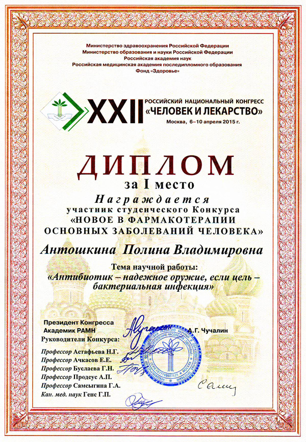

Студентка 5 курса лечебного факультета СГМУ Антошкина Полина Владимировна заняла 1 место на конкурсе студенческих работ, проходившем в рамках XXII Российского Национального Конгресса «Человек и Лекарство». Желаем Полине Владимировне дальнейших научных достижений, творческих успехов и новых побед!
Сотрудники НИИ антимикробной химиотерапии и кафедры клинической фармакологии ГБОУ ВПО СГМУ Минздрава России поздравляют студентку 5 курса лечебного факультета 507 группы СГМУ Антошкину Полину Владимировну, занявшую 1 место на конкурсе студенческих работ «Новое в фармакотерапии основных заболеваний человека», проходившем в рамках XXII Российского Национального Конгресса «Человек и Лекарство» (6-10 апреля 2015 г., Москва), с темой «Антибиотики — надёжное оружие, если цель — бактериальная инфекция»!
Желаем Полине Владимировне дальнейших научных достижений, творческих успехов и новых побед!
Коллектив НИИАХ и кафедры клинической фармакологии СГМУ
